Werkzeugwege festlegen
Profil, Tasche, adaptives Räumen, Bohren, V-Carving, Inlay und 3D-Relief – mit Richtwerten für Vorschub und Drehzahl und kurzer Erklärung, warum.
Vom Entwurf zum Werkstück in einer Anwendung: zeichnen, Werkzeugwege berechnen, in 3D simulieren, prüfen und direkt an die Maschine schicken. Für Windows und GRBL-Steuerungen wie die Ultimate Bee mit xPRO V5.
Frühe Version 0.x · Windows 10/11 (64 Bit) · Updates im Programm

Die Oberfläche führt durch fünf Schritte – Projekt, Entwurf, Bearbeitung, Prüfen, Fräsen. Im Einfach-Modus stehen nur die wichtigsten Einstellungen, alles andere liegt unter »Mehr Einstellungen«.
Profil, Tasche, adaptives Räumen, Bohren, V-Carving, Inlay und 3D-Relief – mit Richtwerten für Vorschub und Drehzahl und kurzer Erklärung, warum.

Materialabtrag in 3D abspielen, Eilgang-Kollisionen und Übermaß finden, Prüfliste mit Lösungsvorschlägen. Bei Fehlern sind Export und Maschinenstart gesperrt.

Verbinden per USB oder TCP, Nullpunkt und Antasten, Werkzeugwechsel-Assistent, Start-Check vor jedem Lauf, Pause, Stopp und Start ab Zeile.
Aufnahmen der Oberfläche; die Maschine im Schritt »Fräsen« ist der eingebaute Simulator, Namen, Preise und Werte in den Beispielen sind erfunden. Screenshots of the interface; the machine in the “Cut” step is the built-in simulator, names, prices and values in the examples are made up.
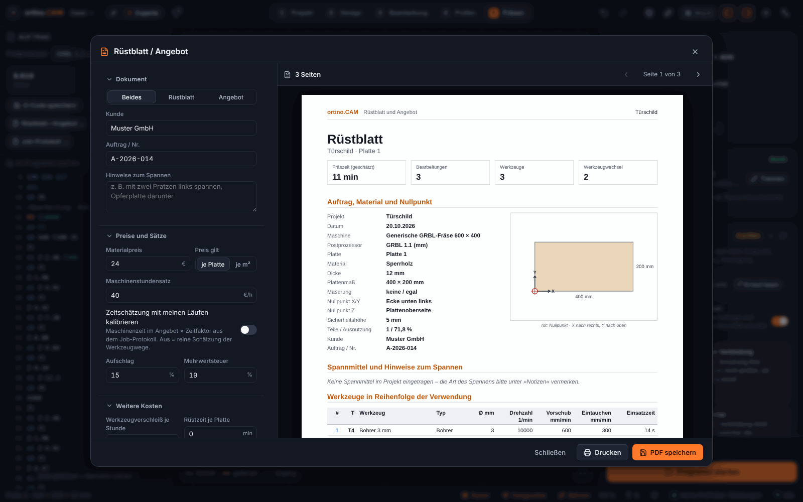
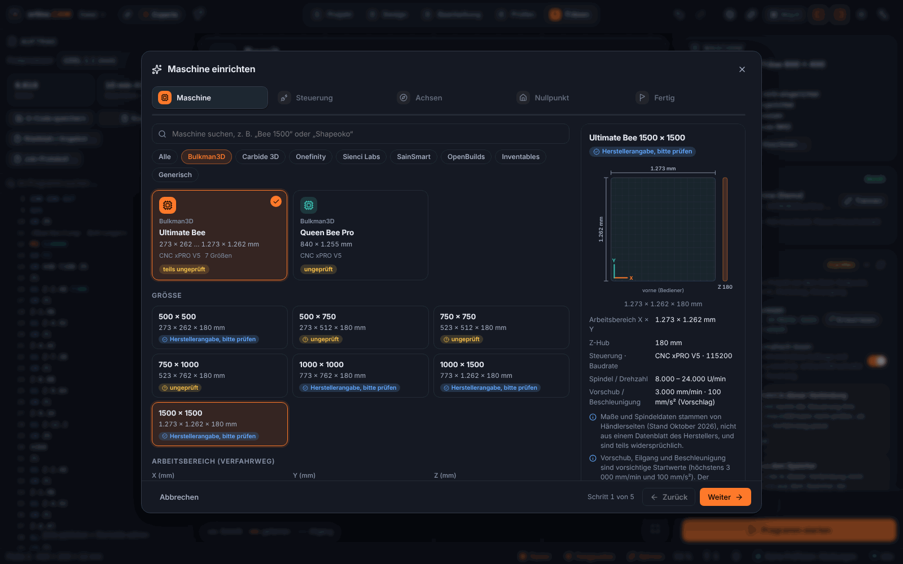
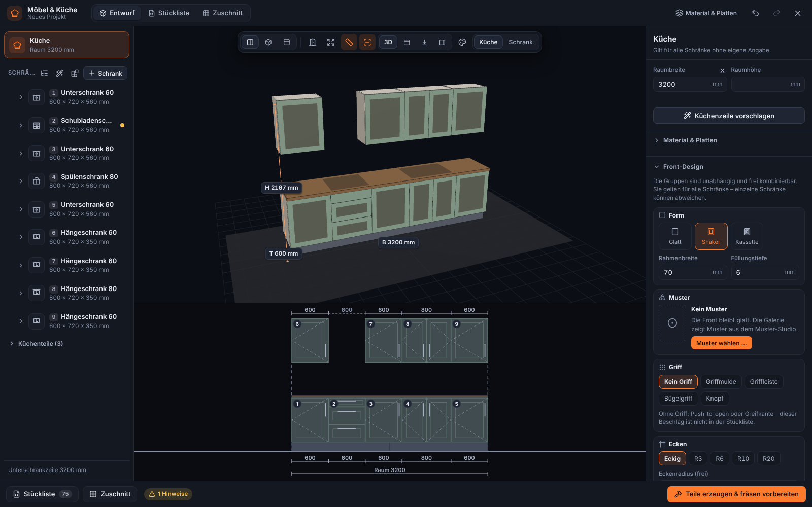
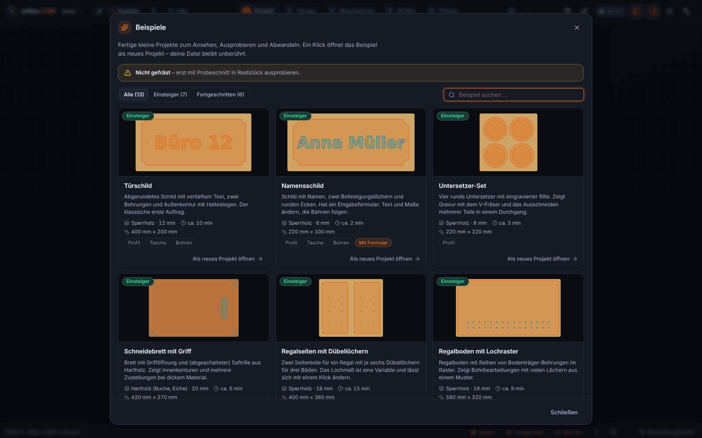
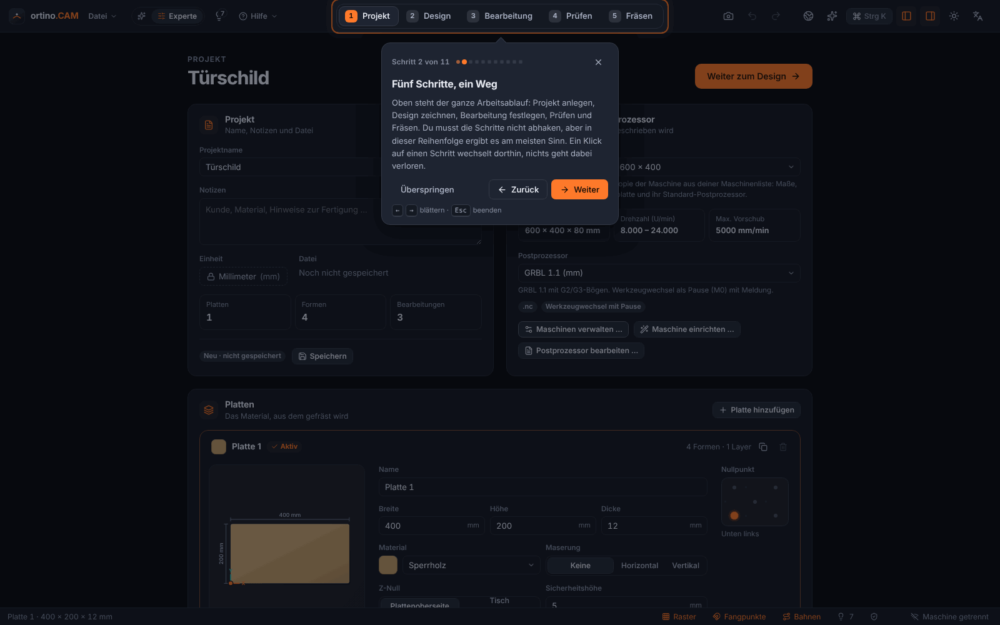
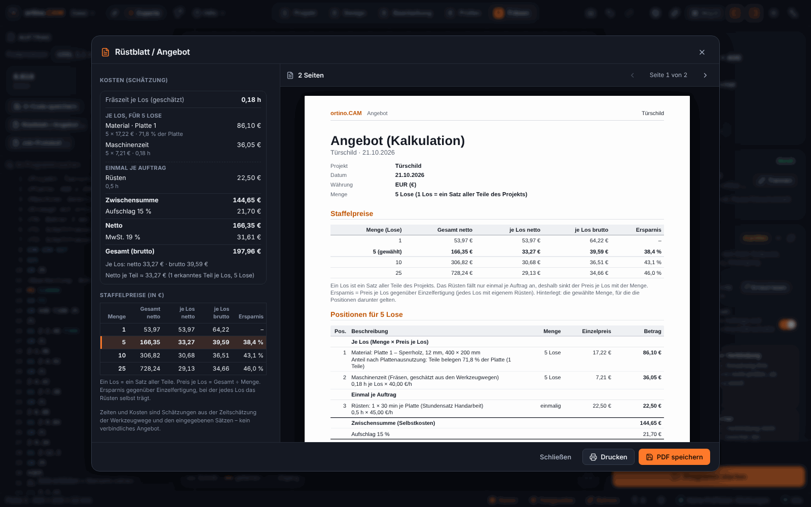
Eine Anwendung für Entwurf, CAM, Simulation und Maschinenbedienung – mit Hilfen für Einsteiger und Werkzeugen für Fortgeschrittene.
Formen, Text (auch auf Pfad, Einzellinienschriften), Bézier-Stift, Knoten, Boolesche Operationen, Offset, Arrays (auch entlang eines Pfads), Seriennummern in Texten, Variablen und Formeln mit Einheiten. Import von SVG, DXF, PDF/AI, Bildern und 3D-Modellen (STL, STEP: als Relief, Umriss oder Schichtmodell); Béziers aus SVG und PDF bleiben Kurven (nur mit selbst erzeugten Dateien geprüft, ebenso STL und STEP).
Profil, Tasche, adaptives Räumen, Bohren, Gewindefräsen (nur Simulator, nicht an einer Maschine erprobt), V-Carving, Inlay, Gravur und 3D-Relief. Postprozessoren für GRBL (an der Ultimate Bee erprobt), grblHAL, FluidNC, Mach3/4 und LinuxCNC, dazu fünf weitere nach Herstellerunterlagen. Außer GRBL ist keiner an einer echten Maschine erprobt.
Materialabtrag abspielen, Kollisionen und Übermaß erkennen, Zeit abschätzen.
Teile platzsparend auf Platten legen (auch Freiform), Passungen und Fingerzinken, Küchen- und Schrank-Designer mit Stückliste und Kantenband, Farben und Griffen, 3D-Reliefs auf Fronten, Möbel-Designer für Tische, Sideboards, Regale und Sitzmöbel, Speichern und Varianten der Küche, Beschlagbibliothek und Rendering als Bild.
GRBL-kompatibel über USB/COM oder TCP: Handsteuerung, Referenzfahrt, Antasten mit Tastplatte oder XYZ-Eckblock, Werkzeugwechsel mit Längensensor, Tastplatte oder festem Taster.
Verfahrweg, Referenzfahrt, Nullpunkt, Werkzeug, Absaugung und mehr werden vor jedem Lauf geprüft. Das Programm schreibt nie Einstellungen in die Steuerung.
Vier QR-Marken in den Ecken, das Kamerabild wird entzerrt und liegt millimetergenau unter dem Entwurf; Werkstück-Umriss erkennen. Nur mit erzeugten Bildern geprüft, nie mit einer echten Kamera.
Standzeit-Grenzen je Werkzeug und ein Wartungsplan je Maschine, mit Hinweisen im Start-Check. Richtwerte, nur Simulator.
Per QR-Code koppeln, in kleinen Schritten verfahren, Pause und Stopp – nur im eigenen WLAN, bei stabiler Verbindung, aus beim Start. Die Verbindung ist unverschlüsselt. Stopp, Verfahren und Nullpunkte setzen sind laut Betreiber an einer echten Maschine bestätigt; Pause und Anzeige nur gegen den Simulator geprüft.
PDF mit Werkzeugliste, Reihenfolge, Zeitschätzung und Vorschau – dazu eine Kostenrechnung aus Material, Maschinenzeit und Aufschlag, auf Wunsch mit Stückzahl, Staffel und Ausschusszuschlag.
Eine Galerie mit 13 Beispielprojekten, eine geführte Einführung durch die fünf Schritte und 6 Lektionen, deren Aufgaben sich selbst abhaken. Die Beispiele sind nicht gefräst: erst im Reststück ausprobieren.
Fräsdesigns entdecken, mit einem Klick laden und eigene teilen. Im Programm integriert, vom Betreiber gehostet. Mehr dazu
Neben dem Programm gibt es ein Community-Portal: eine Webseite, auf der Fräsdesigns gesammelt, durchsucht und geteilt werden – jeweils mit den Werkzeugen, Tiefen, Vorschüben und einer Anleitung, die zum Design gehören.
Kategorien, Suche mit Vorschlägen und Filter nach Art, Material, Plattenstärke, Fräser und Lizenz – dazu »Passt auf meine Maschine«: Das Portal vergleicht den Verfahrweg deiner Maschine mit dem Design. Stöbern und Herunterladen gehen ohne Konto.
In ortino.CAM öffnest du die Community über die Weltkugel in der Kopfleiste (oder Strg+Umschalt+D) und lädst ein Design mit »Laden & öffnen«. Das Programm prüft das Paket vorher (Prüfsumme, Pfade, keine ausführbaren Inhalte); Skripte aus Paketen werden nie ausgeführt. Auf der Webseite gibt es zusätzlich »In ortino.CAM öffnen« und den Download der Datei.
Im Programm über »Design teilen« oder auf der Webseite über »Hochladen«, mit einem kostenlosen Konto. Titel, Kategorie, Bilder, Beschreibung und Anleitung ergänzt du selbst; veröffentlichen kannst du öffentlich oder nicht gelistet. Beim Teilen aus dem Programm sucht ortino.CAM nach Dateipfaden und deinem Benutzernamen im Projekt und entfernt sie auf Wunsch aus dem Paket. Auch Vorlagen mit Eingabeformular lassen sich als Design teilen.
Lade nur hoch, was du selbst erstellt hast oder teilen darfst. Jedes Design trägt eine Lizenz (CC BY, BY-SA, BY-NC, BY-NC-SA, BY-ND, CC0 oder »Alle Rechte vorbehalten«). Laut Community-Richtlinien nicht erlaubt: fremde Werke ohne Erlaubnis, geschützte Logos und Marken, Waffen oder rechtlich eingeschränkte Teile, gefährliche Anleitungen, absichtlich falsche Einstellungen, Schadsoftware. Verstöße lassen sich über »Melden« der Moderation anzeigen.
Als Grundstock ist ein Katalog mit 17 eigenen Beispiel-Designs vorbereitet: Leuchten, Wandbilder, Stühle und Tische. Sie stammen vom KI-Konto »Claude«, wurden nur am Rechner geprüft (Prüfliste, G-Code, Simulation) und nie gefräst oder belastet; bei Möbeln erst einen Prototyp bauen.
Das Portal erreichst du unter benini.access.ly:8088; im Programm ist es schon eingetragen. Fragen, Fehler und Wünsche zum Portal wie überall über GitHub Issues. Datenschutzanfragen und rechtliche Anliegen zum Portal (Konto, Auskunft, Löschung, Sperre) gehen an die E-Mail-Adresse im Impressum des Portals, nicht in ein öffentliches Issue.
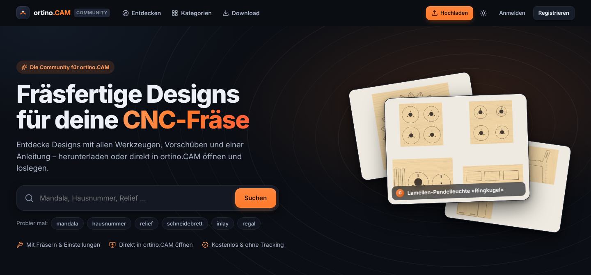
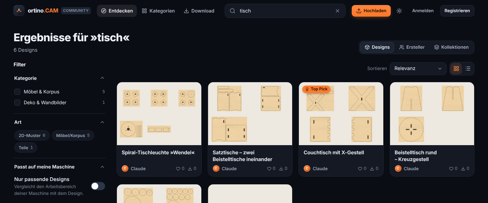
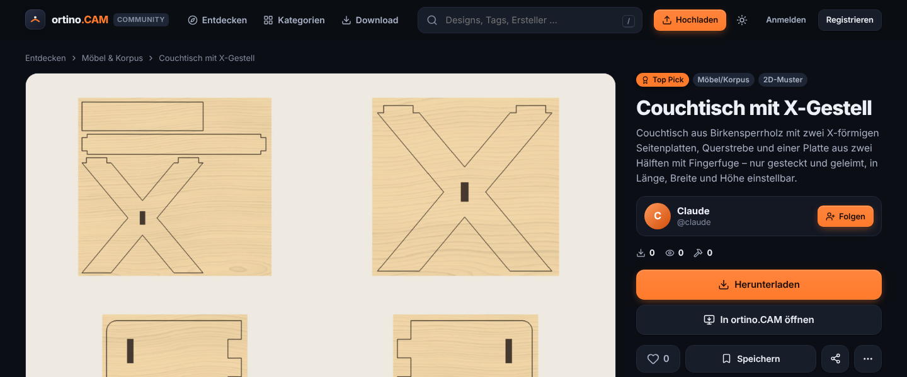
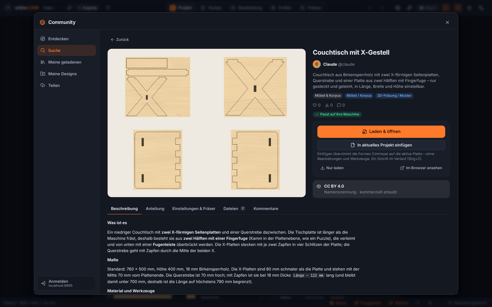
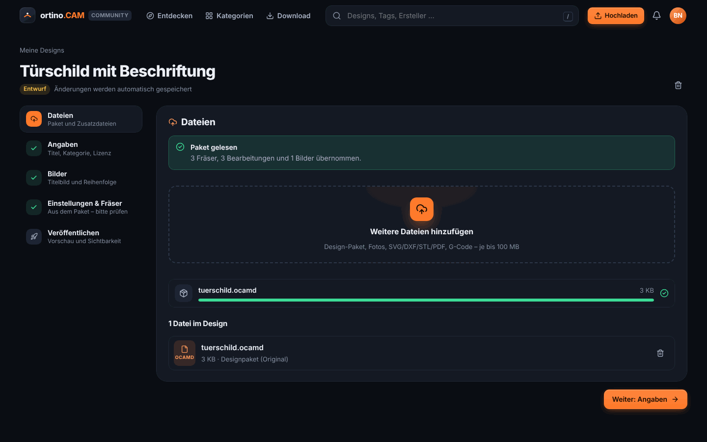
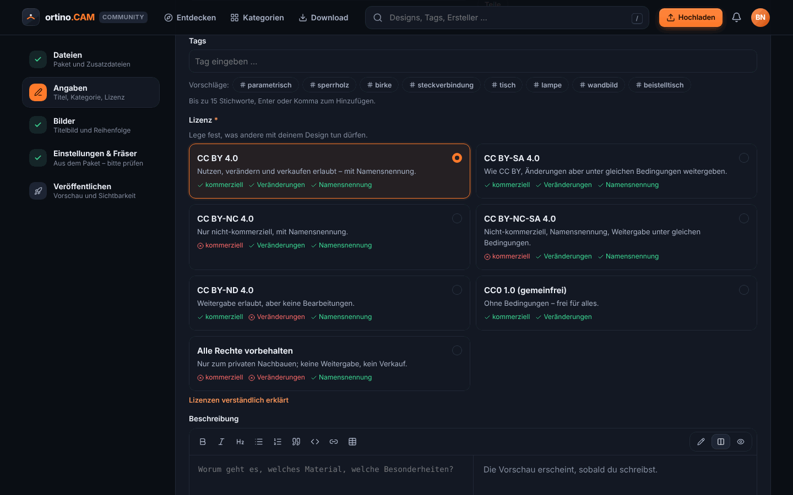
Die Bilder zeigen Beispieldaten aus einer lokalen Installation des Portals: die Katalog-Designs, ohne Nutzerzahlen; das Portal im Internet kann anders aussehen. The images show sample data from a local installation of the portal: the catalogue designs, without user numbers; the portal on the internet may look different.
Alongside the app there is a community portal: a website where milling designs are collected, searched and shared – each with the tools, depths, feeds and instructions that belong to the design.
ortino.CAM bringt einen MCP-Server (Model Context Protocol) mit. Claude Desktop, Claude Code und jeder andere MCP-Client können zeichnen, Bearbeitungen anlegen, die Prüfliste abarbeiten und G-Code erzeugen – live im Programmfenster, jede Aktion ein Rückgängig-Schritt.
ortino-mcp für Claude Desktop und Claude Code.127.0.0.1, zufälliger Zugangsschlüssel, nur auf Wunsch eingeschaltet) für eigene Programme und Skripte.ortino: G-Code erzeugen, Projekt prüfen, DXF/SVG exportieren, Serien aus CSV – auch für CI.// claude_desktop_config.json
{
"mcpServers": {
"ortino-cam": {
"command": "C:\\Users\\<Name>\\AppData\\Local\\ortino.CAM\\ortino-mcp.exe",
"args": []
}
}
}# Kommandozeile
ortino check tuerschild.ocam
ortino gcode tuerschild.ocam -o tuerschild.nc --post grbl
ortino export tuerschild.ocam --format dxf -o tuerschild.dxfDer Pfad gilt für die Installation mit der setup.exe; den genauen Pfad (auch nach einer Installation mit der .msi) zeigt ortino.CAM unter Erweiterungen & KI → Claude verbinden zum Kopieren an. Einstellungen der Steuerung ($…=) schreibt ortino.CAM auf keiner Stufe, auch nicht über die API.
| Stufe | Was erlaubt ist | Standard |
|---|---|---|
read | Projekt, Prüfliste, Vorschau lesen | erlaubt |
edit | Projekt ändern (je Aktion ein Undo-Schritt) | erlaubt |
machine | Verfahren, Spindel, Nullpunkt, Antasten | gesperrt, jede Aktion mit Bestätigung |
danger | Job starten, Dateien überschreiben | gesperrt, jede Aktion mit Bestätigung |
Eine kurze, sachliche Gegenüberstellung mit den Stärken beider Seiten. Verglichen wird mit Vectric Aspire, dem teuersten Programm der Vectric-Reihe.
| Kriterium | ortino.CAM | Vectric Aspire |
|---|---|---|
| Preis | kostenlos | einmalig rund 1.800 € (laut Preisliste des Herstellers; Updates im ersten Jahr inklusive) |
| System | Windows 10/11, 64 Bit | Windows (Mac nur über eine Windows-Virtualisierung) |
| 2D-Entwurf, Profil, Tasche, V-Carving, Gravur, Inlay | ja | ja |
| 3D-Relief | Reliefs aus Mustern, Höhenbildern und Formen erzeugen und Werkzeugwege dafür berechnen (nicht an einer echten Maschine erprobt); kleiner Umfang; Import von STL und STEP in ein Relief (seit 0.4.0, nur von oben, nur mit selbst erzeugten Dateien geprüft); Modellierwerkzeuge (Skulptieren, Komponenten) für eine spätere Version geplant | umfangreiche 3D-Modellierung (Formen, Skulptieren, Komponenten) – hier ist Aspire klar stärker |
| Vierte Achse (Rotary) | nein – für eine spätere Version geplant | ja |
| Nesting | ja (Plattenplaner mit Freiform-Nesting) | ja |
| Zur Maschine schicken | direkt aus dem Programm an GRBL-Steuerungen (USB/COM, TCP), mit Start-Check, Antasten und Werkzeugwechsel-Assistent; an einer echten Maschine erprobt nur mit GRBL an der Ultimate Bee | erzeugt G-Code-Dateien, die ein separates Steuerungsprogramm ausführt |
| Postprozessoren | GRBL (an der Ultimate Bee erprobt); grblHAL, FluidNC, Mach3/4, LinuxCNC, UCCNC, Centroid, ShopBot, MASSO, PlanetCNC (nicht an einer echten Maschine erprobt, die letzten fünf nur nach Herstellerunterlagen); weitere Steuerungen laufend, Beiträge willkommen | sehr großer Katalog, online verwaltet; deutlich mehr Steuerungen |
| Steuerung durch Claude (MCP-Server, lokale API) | ja | keine Angabe des Herstellers gefunden |
| Reife | junge Software (0.x), nur Teile an einer echten Maschine erprobt (eine Maschine, GRBL); Neues aus 0.3.9, 0.3.11, 0.3.12, 0.3.14, 0.4.0 und 0.4.1 nicht systematisch unter Windows (WebView2) geprüft | seit Jahren etabliert, große Nutzergemeinde |
| Hilfe | Anleitungen im Repository, Fragen über GitHub Issues (Einzelperson) | Hersteller-Support, Handbuch, Videos, Forum |
| Kompatibilität | liest Vectric-Werkzeugdatenbanken (.vtdb; das Format ist nicht offiziell dokumentiert, mit einer echten Vectric-Datei bisher nicht getestet) | – |
eine vierte Achse (Rotary) brauchst, umfangreich in 3D modellieren willst (Skulptieren, Komponenten), auf einem Mac arbeitest (über eine Windows-Virtualisierung), Hersteller-Support möchtest oder auf lange Praxis und eine große Nutzergemeinde setzt.
eine GRBL-Maschine direkt aus dem Programm fahren willst, einen Möbel- und Küchen-Designer mit Stückliste suchst, das Community-Portal nutzen möchtest, dein CAM per Claude (MCP) steuern willst und ein kostenloses Programm bevorzugst – und mit einer jungen Software leben kannst.
Angaben zu Vectric nach öffentlich zugänglichen Herstellerangaben und Fachseiten, Stand Oktober 2026, ohne Gewähr; Preise und Umfang ändern sich – bitte beim Hersteller prüfen (Produktseite Aspire). Vectric, VCarve und Aspire sind Marken der Vectric Ltd.; ortino.CAM ist unabhängig und steht in keiner Verbindung zu Vectric. »Geplant« ist die Absicht des Entwicklers, keine Zusage; Umfang und Zeitpunkt können sich ändern.
A short, factual comparison that names the strengths of both sides. The comparison is with Vectric Aspire, the most expensive program in the Vectric range.
| Criterion | ortino.CAM | Vectric Aspire |
|---|---|---|
| Price | free | one-off, about €1,800 (according to the manufacturer’s price list; updates included in the first year) |
| System | Windows 10/11, 64-bit | Windows (Mac only through Windows virtualisation) |
| 2D design, profile, pocket, V-carving, engraving, inlay | yes | yes |
| 3D relief | creates reliefs from patterns, height images and shapes and computes toolpaths for them (not tested on a real machine); small scope; modelling tools (sculpting, components) planned for version 0.4.0 | extensive 3D modelling (shapes, sculpting, components) – Aspire is clearly stronger here |
| Fourth axis (rotary) | no – planned for a later version | yes |
| Nesting | yes (sheet planner with free-form nesting) | yes |
| Sending to the machine | straight from the app to GRBL controllers (USB/COM, TCP), with start check, probing and tool-change assistant; tested on a real machine only with GRBL on the Ultimate Bee | produces G-code files that a separate control program runs |
| Post-processors | GRBL (tested on the Ultimate Bee); grblHAL, FluidNC, Mach3/4, LinuxCNC, UCCNC, Centroid, ShopBot, MASSO, PlanetCNC (not tested on a real machine, the last five written from manufacturer documentation only); more controllers ongoing, contributions welcome | very large catalogue, managed online; considerably more controllers |
| Control by Claude (MCP server, local API) | yes | no statement from the manufacturer found |
| Maturity | young software (0.x), only parts tested on a real machine (one machine, GRBL); what is new in 0.3.9, 0.3.11, 0.3.12, 0.3.14, 0.4.0 and 0.4.1 has not been systematically tested on Windows (WebView2) | established for years, large user community |
| Help | guides in the repository, questions via GitHub issues (one person) | manufacturer support, manual, videos, forum |
| Compatibility | reads Vectric tool databases (.vtdb; the format is not officially documented, not yet tested with a real Vectric file) | – |
need a fourth axis (rotary), want extensive 3D modelling (sculpting, components), work on a Mac (through Windows virtualisation), want manufacturer support or rely on long practice and a large user community.
want to run a GRBL machine straight from the program, want a furniture and kitchen designer with a parts list, want to use the community portal, want to drive your CAM with Claude (MCP) and prefer a free program – and can live with young software.
Statements about Vectric are based on publicly available manufacturer information and trade sites, as of October 2026, without guarantee; prices and scope change – please check with the manufacturer (Aspire product page). Vectric, VCarve and Aspire are trademarks of Vectric Ltd.; ortino.CAM is independent and not affiliated with Vectric. “Planned” is the developer’s intention, not a commitment; scope and timing may change.
ortino.cam_<Version>_x64-setup.exe herunterladen (alternativ die .msi, …_x64_de-de.msi). Die Prüfsumme (SHA-256) steht in den Hinweisen der Version..ocam-Projekte öffnen sich danach per Doppelklick.Updates kommen im Programm selbst über das Portal des Betreibers (nicht über GitHub): Die Kopfleiste zeigt einen Hinweis, installiert wird nur nach deinem Klick, mit geprüfter Signatur und nie mitten in einem Fräsauftrag. Übermittelt werden nur Systemart, Architektur, Installationsart und die installierte Version.
Nein. Private und gewerbliche Nutzung sind kostenlos erlaubt (Bedingungen in der Datei LICENSE im Repository). Der Quelltext ist nicht öffentlich.
Nein, derzeit nur unter Windows 10 und 11 (64 Bit).
Nein. Alles Wesentliche läuft ohne. Den MCP-Server und den Assistenten im Programm kannst du zusätzlich nutzen; der Assistent braucht deinen eigenen Anthropic-Schlüssel.
Mit GRBL-kompatiblen Steuerungen (GRBL 1.1, grblHAL, FluidNC) ja, direkt aus dem Programm. Erprobt ist bisher nur die Ultimate Bee mit xPRO V5, alles andere ist nicht an einer echten Maschine geprüft. Für Mach3/Mach4, LinuxCNC, UCCNC, Centroid, ShopBot, MASSO und PlanetCNC erzeugt das Programm G-Code zum Export; keiner dieser Postprozessoren ist an einer echten Maschine erprobt, die letzten fünf sind nur nach Herstellerunterlagen geschrieben. Prüfe die Maße im Maschinenprofil und fahre zuerst ohne Werkzeug und Material.
Der Installer ist mit einem selbst erstellten Zertifikat signiert, nicht von einer Zertifizierungsstelle. Windows (SmartScreen) zeigt deshalb eine Warnung: »Weitere Informationen → Trotzdem ausführen«. Die Prüfsumme (SHA-256) steht in den Hinweisen jeder Version.
Nein, es sind Richtwerte. Sie hängen von deiner Maschine, deinem Fräser und deinem Material ab. Prüfe sie, fange vorsichtig an und probiere an einem Reststück.
Das Programm bringt über 250 Fräser mit und kann Fräserdatenbanken anderer Programme einlesen (Vectric-.vtdb, Fusion, CSV). Das .vtdb-Format ist nicht offiziell dokumentiert und wurde mit einer echten Vectric-Datei bisher nicht getestet.
Bei der Update-Abfrage nur Systemart, Architektur, Installationsart und die installierte Version, an das Portal des Betreibers (nicht an GitHub). Mit dem Community-Portal sprichst du nur, wenn du es benutzt. Der Assistent spricht mit Anthropic, wenn du ihn mit deinem Schlüssel einschaltest. Die lokale API ist aus, bis du sie einschaltest, und nur auf 127.0.0.1 erreichbar.
Am wertvollsten sind Tests an echten Maschinen und Fehlermeldungen, am besten als Issue auf GitHub.
Neue Mitwirkende sind willkommen. Alles läuft über GitHub Issues: Fragen, Fehler, Wünsche und vor allem Berichte von Tests an echten Maschinen. Maschinenprofile, Postprozessor-Vorlagen, Beispielprojekte, Übersetzungen und Anleitungen kannst du als Pull Request beitragen (CONTRIBUTING.md). Wer an der Entwicklung des Programms selbst mitarbeiten möchte, meldet sich per Issue »Mitarbeit am Programm«; der Betreiber gibt Interessierten den Zugang frei. Anleitungen zum Benutzen stehen im Wiki. Issues sind öffentlich: bitte keine persönlichen Daten hineinschreiben. Datenschutzanfragen und rechtliche Anliegen zum Community-Portal gehen an die E-Mail-Adresse im Impressum des Portals.